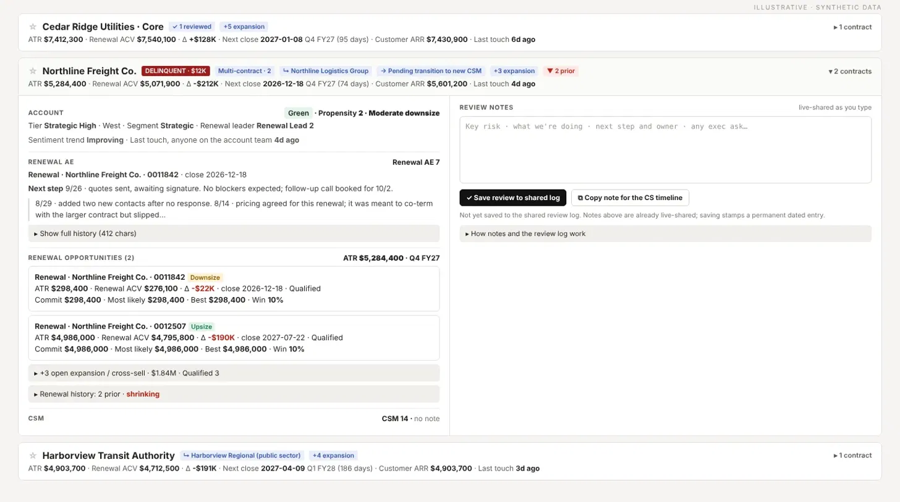

F.01
- Status
- Live · 100% of reviews
- Users
- 18 managers + Renewals leaders
- Scope
- ~6,200 renewals
- Built with
- Claude artifact · Salesforce · Gainsight
Renewal Review Workbench
A Claude artifact on live CRM and CS-platform data, read-onlyProblem
Monthly renewal reviews ran on a static spreadsheet. Meetings were spent clicking between systems, and decisions had nowhere to live between reviews.
Built
A Claude artifact that puts the CSM's notes, the renewal rep's notes, value at risk, forecast, and health on one card per renewal. Managers send Slack pre-reads and log decisions to a shared record.
Result
- 100% of renewal reviews across Enterprise, international, and Mid-Market; spreadsheet retired
- 85% of $250K+ renewals reviewed 90+ days before close
- 25% less late-identified risk and 10% better forecast accuracy on reviewed renewals
- Load time cut from 5 minutes to 30 seconds
Next90% early-review coverage and 40% less late-identified risk by April 2027.
